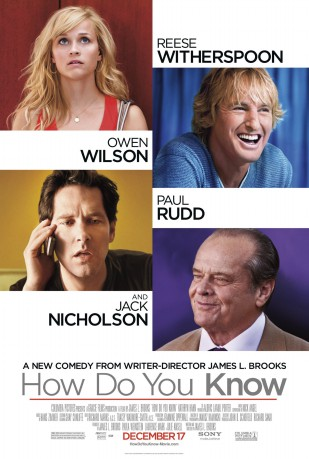

#7339 Woher weißt du, dass es Liebe ist?
Alternativ: How Do You Know
 
 IMDB-Wertung: 5.4 / 10
IMDB-Wertung: 5.4 / 10  Metascore: 0
Metascore: 0 
Star softball player, Lisa, has just been cut from the national team; Scholarly business man, George, has just been indicted from his father's company. With everything that they know in their lives taken from them, Lisa and George attempt to find romance. Lisa's potential boyfriend, Matty, however, is as clueless and perpetually single as they come, and George's girlfriend just dumped him. A chance hook-up through mutual friends, Lisa and George may be able to form a friendship, or more, that can help them climb out of the piles of lemons that life has handed to them.
Jahr: 2010
Dauer: 120 Minuten
FSK: 0
Land: USA Studio: Columbia PicturesTonspuren: DTS - ,
Untertitel: Deutsch,
Auflösung: 1080p (1920x1040) Größe: 8980 MB
Genre: Drama, Komödie, Liebe
Regisseur:  James L. Brooks
James L. Brooks
Drehbuch: James L. Brooks
Soundtrack:
Darsteller:
 Reese Witherspoon als Lisa
Reese Witherspoon als Lisa Paul Rudd als George
Paul Rudd als George Owen Wilson als Matty
Owen Wilson als Matty Jack Nicholson als Charles
Jack Nicholson als Charles Kathryn Hahn als Annie
Kathryn Hahn als Annie- Mark Linn-Baker als Ron
 Lenny Venito als Al
Lenny Venito als Al Molly Price als Coach Sally
Molly Price als Coach Sally- Ron McLarty als George's Lawyer
- Shelley Conn als Terry
 Domenick Lombardozzi als Bullpen Pitcher
Domenick Lombardozzi als Bullpen Pitcher John Tormey als Doorman
John Tormey als Doorman- Teyonah Parris als Riva
 Tony Shalhoub als Psychiatrist
Tony Shalhoub als Psychiatrist Dean Norris als Softball Coach
Dean Norris als Softball Coach Will Blagrove als Matty's Teammate
Will Blagrove als Matty's Teammate Andrew Wilson als Matty's Teammate
Andrew Wilson als Matty's Teammate- David A. Gregory als Matty's Teammate
 Yuki Matsuzaki als Tori
Yuki Matsuzaki als Tori Bill McKinney als Maitre d'
Bill McKinney als Maitre d' Tara Subkoff als Subpoena Woman
Tara Subkoff als Subpoena Woman- Mary Gallagher als Other Female Coach
- Lyssa Roberts als Groped Girl
- Jessi Sheldon als U.S. National Team
 Brian Distance als U.S. National Team
Brian Distance als U.S. National Team- Greg Pronko als Security Guard #2
- Noah Baron als Baseball Fan , uncredited
 Terrence Beasor als Lisa's Dad , uncredited
Terrence Beasor als Lisa's Dad , uncredited- Alexandra Begg als Baseball Player's Wife , uncredited
 Jacob Bertrand als Boy , uncredited
Jacob Bertrand als Boy , uncredited- Anthony Bradford als Partygoer #1 , uncredited
- Rachel Breitag als Gorgeous Girl #1 , uncredited
 Jennifer Butler als Charles' Paralegal , uncredited
Jennifer Butler als Charles' Paralegal , uncredited- Mustafa Cimen als Foreign Diplomat , uncredited
- Chris Conlon als Bullpen Pitcher , uncredited
- Kirk Curran als College Student , uncredited
- Patricia DiZebba als Condo Resident , uncredited
- Bennett Dunn als Restaurant Bartender , uncredited
- Doug Henderson als Tourist , uncredited
- Ken Holliday als Baseball Fan , uncredited
- George Kardulias als Baseball Fan in the Bleachers , uncredited
- Jonathan Ryan Karp als Busboy , uncredited
 Basil Kershner als Player's Parent , uncredited
Basil Kershner als Player's Parent , uncredited Steven J. Klaszky als Pedestrian , uncredited
Steven J. Klaszky als Pedestrian , uncredited Michael J. Kraycik als Cafe Patron , uncredited
Michael J. Kraycik als Cafe Patron , uncredited- Atif Lanier als U.S. National Team , uncredited
- Traci Law als Lawyer , uncredited
- Michael James Levy als Waiter , uncredited
- Cindy Marie Martin als Nationals Fan , uncredited
- Melissa Martinelli als Teammate's Girlfriend , uncredited
Datei: X:\2010(N-Z)\Woher weißt du, dass es Liebe ist (2010, FSK0, 1920x1040).mkv seit 17.10.2017
Festplatte: HD 2010(G-Z)-2011(A-F)
 Es gibt insgesamt 115 Filme in der Gruppe '2010(N-Z)'
Es gibt insgesamt 115 Filme in der Gruppe '2010(N-Z)'